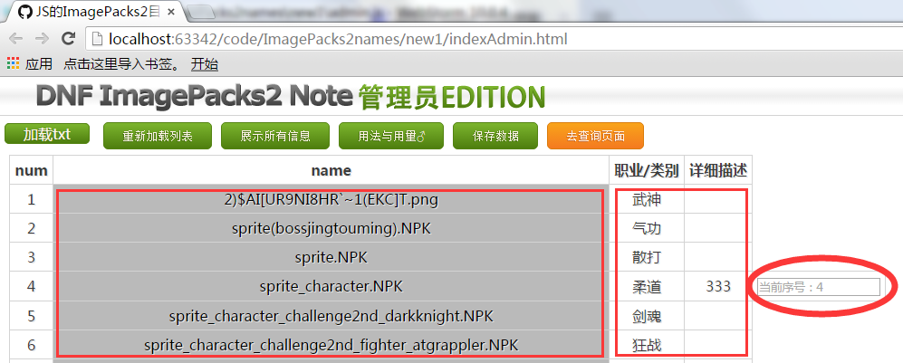
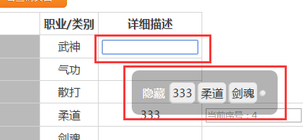
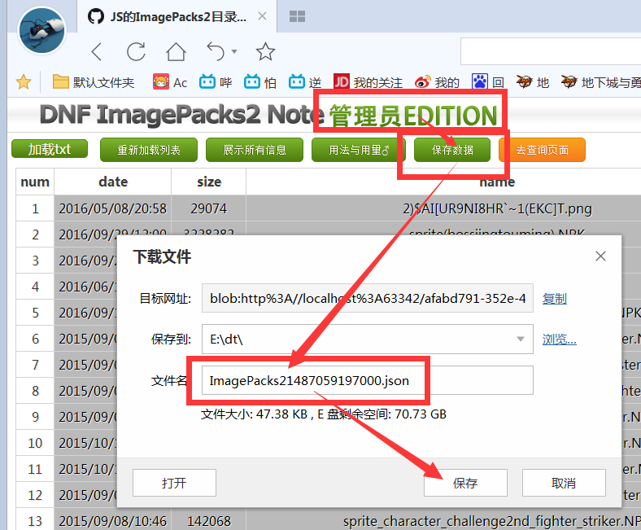

本工具的具体用法：
1、本工具的目的是：线上记录ImagePacks2目录中文件的译名注释，并努力保持最新
2、对于版本更新出的新文件，需要管理员人工同步到这里
3、管理员利用本页面产出的新的释义，仍需管理员人工同步到这里=）
4、热心市民提交的释义，请最好差不多大概简单审地核一下再由管理员人工同步到这里
5、我个沙雕，为什么不在线同步而是由管理员人工同步到这里呢？？(详情请搜索github pages弄个明白把！)
以↑是概述
以↓是具体步骤
1、本工具的基本原理：
老马推出新版本→
管理员扫了一下文件目录→
管理员在本页面检测到了新的文件→
管理员利用本页生成了新版本的文档数据→
管理员将新版本的ImagePacks2目录同步到线上→管理员冲了上去管理员一键99999管理员顺势打出了GG
2、本页编辑功能的具体用法：

上图中，编辑功能由两种颜色区别开，
灰色区域：数据的固有部分，不能编辑，点击此区域会在表格最右侧圆圈里新建栏目
白色区域：注释区，可自由编辑，点击后进入编辑模式，同时会弹出历史输入候选（！为避免错别字，推荐使用历史候选清单！）

如上图，本人向大家隆重推荐使用此清单，来规避错别字带来的筛选疏漏
直接点击已有条目即可将其添加至此清单！

如上图点击保存数据，浏览器会以ImagePacks2外加一段标志编辑时间的数字（时间戳）为名保存你的操作
若想上传本数据需要将其重命名为ImagePacks2
强烈注意ImagePacks2后面还有个2，不要一起删掉、、
得到名为ImagePacks2.json的数据文件之后该怎么办？？其中涉及到github的用法与用量，
3、游戏文档变动的获取方法：